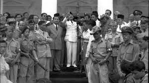
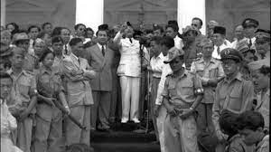

|
Ciri-ciri Demokrasi Terpimpin
 |
Demokrasi Terpimpin(1959-1966)
Ciri-ciri Demokrasi Terpimpin


Demokrasi terpimpin merupakan sistem politik yang pertama kali dikenalkan di Indonesia pada era pemerintahan Presiden Soekarno. Pada masa ini, Indonesia menerapkan sistem pemerintahan yang berpusat kepada kepala negara Soekarno. Kuasa sebagai kepala negara dipegang oleh Soekarno sejak dikeluarkannya dekrit presiden 1959. Konsep demokrasi ini berasal dari ideologi politik Soekarno, yang merupakan dasar negara Indonesia “Pancasila”. Kedua pihak yang memimpin pada masa ini disebut “Dwi Tunggal”, yang terdiri atas Presiden dan Wakil Presiden. Presiden, dan Wakil Presiden dianggap sebagai mediator atau orang penengah antara rakyat dan pemerintahan. Selain itu, keduanya juga dianggap sebagai orang yang memahami kebutuhan dan aspirasi rakyat mereka. Presiden Soekarno telah mengatakan bahwa sistem demokrasi parlementer tidak menjiwai semangat gotong royong dan kekeluargaan rakyat Indonesia.
Pada masa ini, demokrasi terpimpin sering dicirikan sebagai penggabungan sistem kepartaian dengan terbentuknya DPR-GR. Walaupun sudah memiliki lembaga legislatif DPR, dalam sistem politik lembaga ini dihitung cukup lemah, begitu pula terkait hak asasi manusia. Selain itu, juga terdapat beberapa ciri-ciri demokrasi terpimpin seperti;
1. Kepemimpinan yang dominan
Pada demokrasi terpimpin, ditetapkan seorang pemimpin atau kelompok kecil yang bekerja sebagai pusat kekuasaan politik. Maka, semua putusan politik, dan arahan negara berada pada tangan pemimpin tersebut (Presiden, dan Wakil Presiden).
2. Pemimpin Sebagai Mediator
Seorang pemimpin pada masa ini bekerja sebagai seorang mediator antara rakyat dan pemerintahan negara. Para pemimpin ini menggap bahwa mereka memahami kebutuhan dan aspirasi rakyat. Maka, para pemimpin harus bertindak sebagai penghubung antara rakyatnya dan pelaksanaan kebijakan pemerintahan.
3. Dominasi Partai Politik
Para pemimpin negara mendapatkan dukungan kuat dari partai politik, dalam sistem politik. Partai tersebut merupakan partai tunggal yang mendominasi dan menguasai jalannya pemerintahan negara.
4. Pembatasan Kebebasan Individu
Pada masa ini, mayoritas rakyat negara dibatasi atas kebebasan individu dan hak-hak politik. Hal ini terjadi karena adanya pembatasan kebebasan dalam berpendapat, pers, dan berserikat.
5. Konsensus Politik
Pada masa ini, ditekankan pentingnya mencapai konsensus politik dalam pengambilan keputusan. Keputusan ini akan diambil setelah terjadinya dialog dan musyawarah antara pemimpin dan partai politik yang terlibat.
6.Fokus Pada Tujuan Sosial dan Ekonomi
Pemerintah dan pemimpin memiliki peran aktif dalam merencanakan dan mengarahkan pembangunan ekonomi. Serta mencapai tujuan sosial yang dianggap penting bagi masyarakat negara. Hal ini disebabkan karena adanya penekanan pada tujuan sosial dan ekonomi negara.

Sistem Pemerintahan
Pada masa ini, dibentuk beberapa lembaga baru seperti;
a. Majelis Permusyawaratan Rakyat Sementara (MPRS)
MPRS dibentuk dengan dasar Dekrit 5 Juli 1955. MPRS terdiri dari 281 anggota DPR gotong royong, 94 utusan daerah, dan 200 wakil golongan karya. Sidang pertama MPRS diadakan pada 10 November hingga 7 Desember 1960 dan sidang kedua pada 15 hingga 22 Mei 1963.
b. Dewan Pertimbangan Agung Sementara (DPAS)
Pembentukan DPAS didasarkan pada penetapan Presiden nomor 3 Tahun 1959. Lembaga ini ditugaskan untuk memberi jawaban dan mengajukan usulan pada pemerintah.
c. Dewan Perwakilan Rakyat Gotong Royong (DPR-GR)
DPR-GR ditugaskan untuk membantu presiden menurut bidangnya. Lembaga ini dibentuk dengan anggota sebanyak 283 orang, terdiri dari 153 wakil partai politik, dan 130 wakil golongan.
d. Kabinet Karya
Kabinet karya memiliki tugas untuk menstabilkan keamanan, memperbaiki keadaan ekonomi terutama sandang dan pangan, serta tetap berjuang untuk merebut Irian Barat. Kabinet karya dibentuk pasca pembubarannya kabinet Djuanda.
e. Front Nasional
Front Nasional didasarkan pada penetapan presiden nomor 13 tahun 1959. Lembaga ini memiliki tugas untuk memperjuangkan cita-cita proklamasi, dan membangun cita-cita yang ada dalam UUD 1945
Penyimpangan Demokrasi Terpimpin
Pada masa demokrasi terpimpin mulai munculnya sistem otoriter dimana pemimpin atau kelompok kecil yang berkuasa membatasi kebebasan berindividu rakyat, hak-hak politik rakyat, dan kebebasan berpendapat. Pemerintah memiliki kuasa yang kuat atas media massa yang dapat dikonsumsi rakyat. Seringkali juga menggunakan kekuasan mereka untuk menghukum individu-individu tersebut yang berani melanggarnya. Pada masa ini juga, pemimpin negara dapat memanipulasi proses politik, pemilihan umum, dan lembaga-lembaga negara agar mereka tetap memiliki kuasa mereka. Hal yang bisa dilakukan sebagai contoh adalah, mengubah hasil pemilihan umum, melarangkan partai politik untuk beroposisi, dan menggunakan kekuatan negara untuk menghancurkan lawan politik. Tentu saja pada masa ini korupsi sering menjadi masalah serius. Ketidaksetaraan dan konsentrasi kekuasaan yang tinggi dapat memberikan peluang bagi korupsi yang melibatkan pejabat pemerintah, pemimpin politik dan kelompok elit yang berkuasa.
Walaupun pada masa ini yang menekankan tujuan sosial dan ekonomi yang setara, ada kemungkinan terjadinya ketidakadilan sosial antara rakyatnya.
Karena kekuasaan yang terpusat, terjadinya ketimpangan ekonomi dan sosial yang signifikan.
Sering terjadinya, masyarakat umum tidak mendapatkan janjian pemerintah, melainkan kelompok yang berkuasa dapat semua keuntungan negara.
Kurangnya akuntabilitas yang diambil oleh pemimpin negara. Ada kemungkinan dimana pemimpin negara tidak dipertanggungjawabkan sesuai dengan tindakan dan kebijakan mereka.